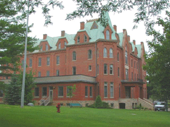
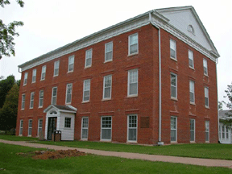

Merchant and hotelier Allison Willits first conceived the idea of a private school to improve local commerce. With the aid of Methodist minister George B. Bowman, he obtained 20 acres of land atop the hill for the campus. In 1853 the Iowa Conference Seminary opened for classes with 161 students.
By 1857, with the name changed to Cornell College in the hopes of attracting New York businessman William W. Cornell as benefactor, the school had built two brick buildings: Old Sem and Old Main. Enrollment was nearly 300.
The college prospered. Extensive use of locally produced brick and limestone can be seen both on and off campus. It is interesting to note the use of native limestone in the town's most prominent ecclesiastical buildings - the landmark King Chapel (1876), First Presbyterian Church (1895), and First Methodist Church (1899), which remain largely unchanged today.
On campus, Old Sem and Old Main are used daily. Other structures of note include the Eastlake Victorian Bowman Hall (1855), and the Beaux Arts style of Norton Geology Center (1904) as well as McWethy Hall (formerly Alumni Gymnasium - 1909)
Cornell has its own historical walking tour guides and brochures. Copies are available at the college Commons, Old Sem and Wade House (Admissions).